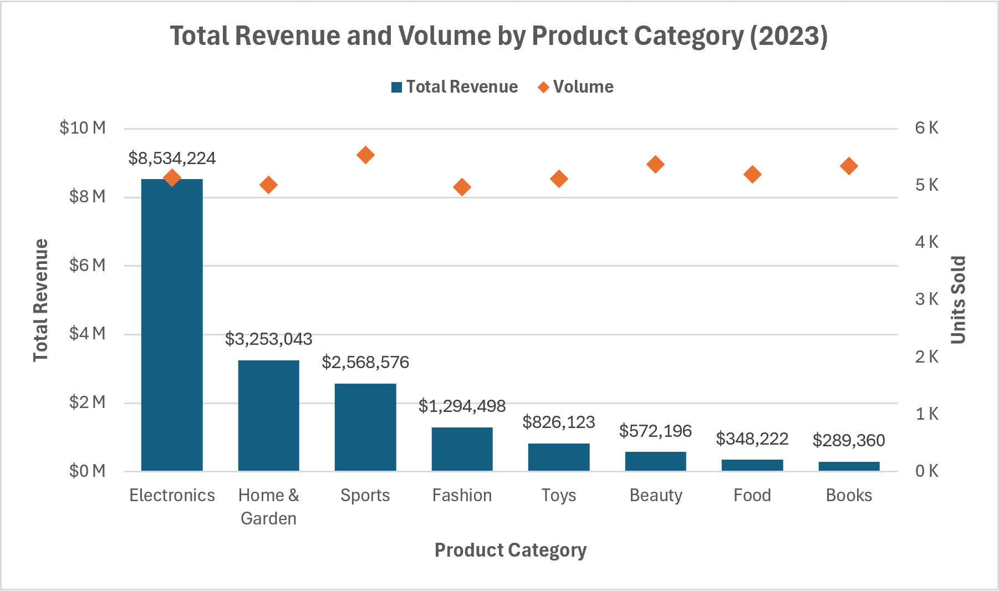
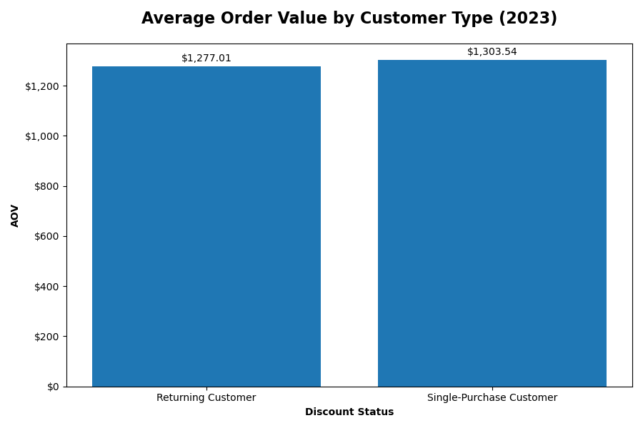
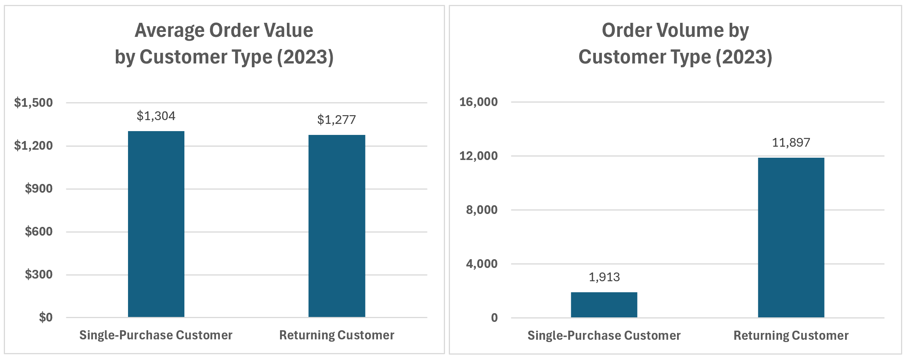
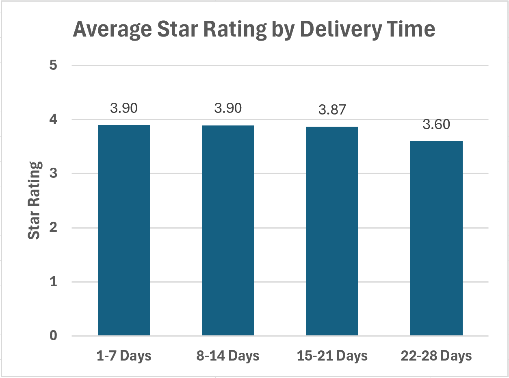

Five business questions
Each question below is answered with a chart and a written finding.
Click to expand.
1 Which product categories drive the most revenue vs. order volume?
Revenue in 2023 was highly concentrated among a small number of categories. Electronics, Home & Garden, and Sports accounted for 81% of total revenue despite representing only 38% of units shipped.
In contrast, Beauty, Food, and Books shipped nearly identical unit volumes but together contributed just 7% of total revenue. The data reveals a clear split between high-value categories that drive revenue efficiency and lower-value categories that rely on volume without a proportional return.


2 Do higher discounts actually lead to higher revenue per order?
Discounted orders had slightly higher pre-discount order values than non-discounted orders. On average, orders receiving discounts were approximately $39 higher before the discount was applied. However, this does not establish that higher discount amounts drive increased order revenue.

3 How do returning customers differ from new customers in spend and frequency?
Returning customers differ from single-purchase customers primarily in purchasing frequency, not spend per order. The average order value between the two groups differs by only $27, while returning customers place 6.2× more orders.
This indicates that revenue growth is driven by customer retention rather than higher per-order spend. Strategies such as loyalty programs or re-engagement campaigns that increase purchase frequency are likely to outperform those focused on upselling.

4 Does device type affect purchasing behavior and order value?
Device type shows a clear relationship with purchasing behavior but only a modest impact on order value. Mobile devices account for the majority of orders, while Desktop orders have an average order value approximately $61 higher than Mobile orders. Tablet usage remains relatively low across both order volume and value.
Overall, these results suggest that device choice primarily influences purchasing frequency rather than spend per transaction, with Mobile devices serving as the dominant channel for engagement and Desktop devices providing a small advantage in per-order value.

5 Is faster delivery associated with higher customer ratings?
Faster delivery is not strongly associated with higher customer satisfaction. Average ratings remain nearly flat across all delivery time ranges, with only a slight decline as delivery time increases.
Given the minimal variation, investments aimed specifically at reducing delivery times are unlikely to yield meaningful improvements in customer ratings.
